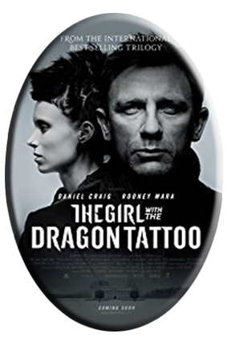
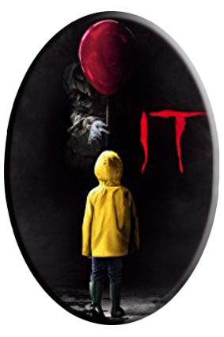
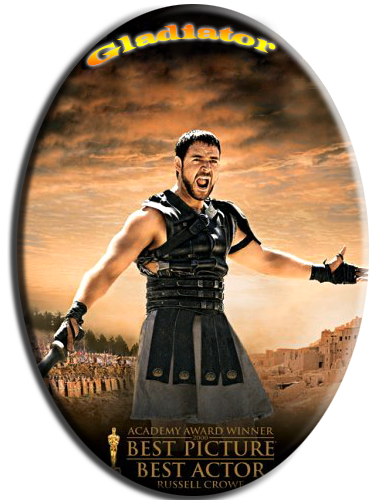

Egamberdiev Javlonkhon ID:1810218

The Girl with the Dragon Tattoo is the first film in Columbia Pictures' three-picture adaptation of Stieg Larsson's literary blockbuster The Millennium Trilogy. Directed by David Fincher and starring Daniel Craig and Rooney Mara, the film is based on the first novel in the trilogy, which altogether have sold 50 million copies in 46 countries and become a worldwide phenomenon. -- (C) Sony
Rating: R (for brutal violent content including rape and torture, strong sexuality, graphic nudity, and language)
Genre: Drama, Mystery & Suspense
Directed By: David Fincher
Written By: Steven Zaillian
In Theaters: Dec 20, 2011 Wide
On Disc/Streaming: Mar 20, 2012
Box Office: $102,515,793
Runtime: 157 minutes
Studio: Sony Pictures

In the summer of 1989, a group of bullied kids band together to destroy a shape-shifting monster, which disguises itself as a clown and preys on the children of Derry, their small Maine town.
Director: Andy Muschietti
Writers: Chase Palmer (screenplay by), Cary Joji Fukunaga (screenplay by) (as Cary Fukunaga) | 2 more credits »
Stars: Bill Skarsgård, Jaeden Lieberher, Finn Wolfhard | See full cast & crew »

A former Roman General sets out to exact vengeance against the corrupt emperor who murdered his family and sent him into slavery.
Director: Ridley Scott
Writers: David Franzoni (story), David Franzoni (screenplay)
Stars: Russell Crowe, Joaquin Phoenix, Connie Nielsen | See full cast & crew

A war-hardened Crusader and his Moorish commander mount an audacious revolt against the corrupt English crown in a thrilling
action-adventure packed with gritty battlefield exploits, mind-blowing fight choreography, and a timeless romance.
Director: Otto Bathurst
Writers: Ben Chandler (screenplay by), David James Kelly (screenplay by) | 1 more credit »
Stars: Taron Egerton, Jamie Foxx, Ben Mendelsohn | See full cast & crew »
1
2